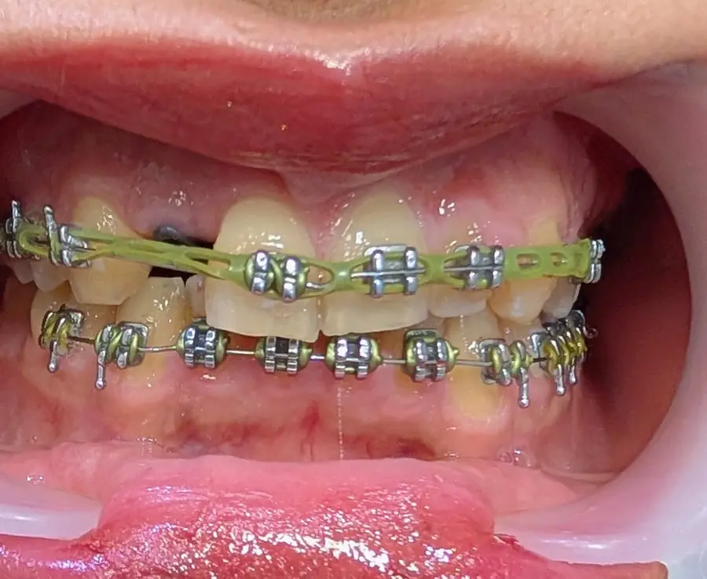
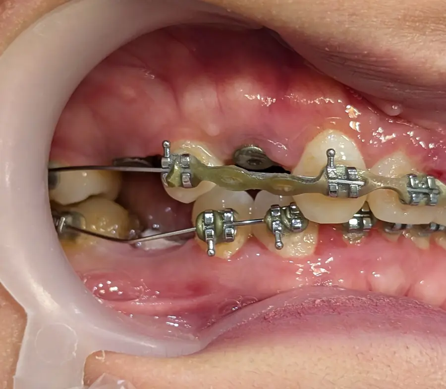

نسخه استخراجشده؛ ترجمه یا تأیید علمی انجام نشده است. وضعیت: captured
بیمار از طرف متخصص ارتودنسی ارجاع شده است. پرسش این است: آیا فضای موجود برای بازسازی نهایی مناسب است، یا طرح درمان ارتودنسی باید تغییر کند؟

در درمانهای ترکیبی، ارتودنتیست پیش از بستن پرونده باید بداند فضایی که ساخته برای بازسازی نهایی درست است یا نه؛ نه کم، نه زیاد. پاسخ این پرسش نزد پروتزیست است و ارجاع میاندرمانی برای همین است: اصلاح فضا وقتی براکتها هنوز روی دنداناند ارزان است و بعد از دباند، دوبارهکاری پرهزینه.
به این ترتیب تصمیم صرفاً ذهنی یا روی مدل دوبعدی نیست؛ نتیجهی نهایی پیش از درمان قطعی دیده، لمس و تأیید میشود، و ارتودنسی و پروتز بهجای دو تصور ذهنی، روی یک شیء مشترک و در یک مسیر قابل پیشبینی جلو میروند.
بیمار دیگری از طرف ارتودنتیست برای ارزیابی فضا ارجاع شد، با همان پرسش ساده: «فضاها مناسباند یا نه؟» در موارد مرزی مسیر مشخص است: اسکن، طراحی کامپیوتری، ساخت روکش موقت با اندازهی آناتومیک صحیح، سپس ارزیابی اینکه فضا کم است یا زیاد و تکمیل ارتودنسی بر همان اساس. اما این کیس مرزی نبود.

کار شروع شد، با ثبت این نکته که اگر در لبخند نهایی ایرادی دیده شود، منشأ آن تشخیص پروتزی نیست، بلکه محدودیت ارتودنسی است. فکری که شاید در ادامه اجرا شود: یک ایمپلنت و طراحی دو پرمولر روی یک ایمپلنت، تا بیمار نمای دو دندان را ببیند، نه یک مولر پهن و سنگین.
کنار یونیت، گاهی تصمیمها بیشتر از آنکه میلیمتری باشند، تصویریاند. تشخیص بدیهی را هم نباید پشت تشریفات پنهان کرد.
نوع سؤال: ساخت کلمه · 4 خانه
حروف منبع: ر · م · ی · ز